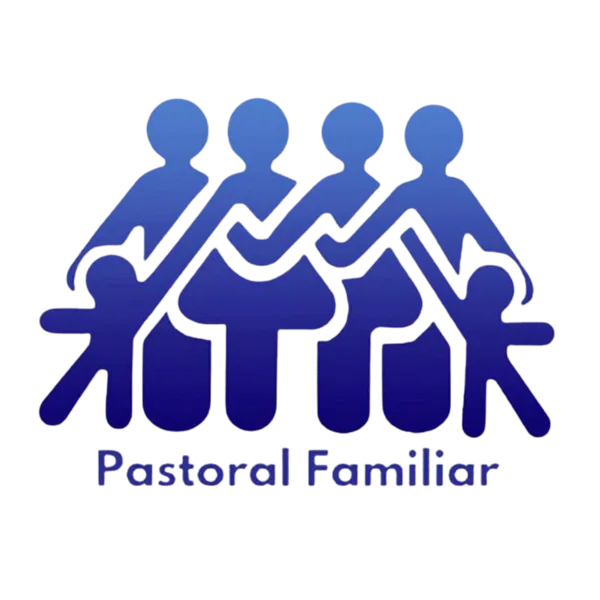

Asamblea Nacional de Pastoral Familiar 2026
Del 25 al 27 de septiembre, matrimonios coordinadores y asesores de Pastoral Familiar de todo el país se juntaron en Caracas bajo el lema «Alegría que acompaña, fe que persevera».

Datos del evento
- Fecha
- Del 25 al 27 de septiembre de 2026
- Hora
- No publicada en las notas oficiales.
- Modalidad y lugar
- Presencial · Casa Monseñor Ibarra, sede de la CEV, Montalbán, Caracas
- Organiza
- Área de Familia y Vida del Centro de Laicos, Familia y Juventud, del SPEV de la Conferencia Episcopal Venezolana
- Estado
- Realizado
Cómo fue
La asamblea abrió con un mensaje en video de un obispo y una dinámica de tejer una red con hilos, «El viaje de la familia en red». Después, los grupos por provincia eclesiástica trabajaron con la «Conversación en el Espíritu», que presentó el viernes una religiosa, ex superiora general de una congregación.
Hubo tres ponencias. El subsecretario de la CEV habló de «La Casa y el Tejido: reconstruyendo la esperanza de la Iglesia doméstica en tiempos de sinodalidad». Los coordinadores del Área de Familia y Vida expusieron «Amoris Laetitia 10 años después». La directora del Centro, Saritza Roque, habló de la realidad del adulto mayor en las familias.
Los movimientos compartieron buenas prácticas de acompañamiento a familias. La Diócesis de La Guaira presentó el anteproyecto «Reconstruyendo nuestra esperanza», para acompañar a las familias afectadas por los terremotos del 24 de junio. La oración marcó los tres días: adoración eucarística el viernes, oración mariana el sábado con el Apostolado Mundial de la Virgen de Coromoto, por el Año Coromotano, y Eucaristía de envío el domingo. Los participantes destacaron la necesidad de herramientas, sobre todo espirituales, para acompañar a familias vulnerables, y volvieron a sus diócesis con el propósito de seguir caminando en sinodalidad, caridad, paciencia y escucha.
Qué se hizo
- Escucharon el mensaje de apertura de un obispo, en video.
- Tejieron una red con hilos en la dinámica «El viaje de la familia en red».
- Siguieron la ponencia «La Casa y el Tejido: reconstruyendo la esperanza de la Iglesia doméstica en tiempos de sinodalidad».
- Siguieron la ponencia «Amoris Laetitia 10 años después».
- Conocieron la realidad del adulto mayor en las familias.
- Practicaron la «Conversación en el Espíritu», desde su introducción el viernes 25.
- Rezaron con adoración eucarística (viernes), oración mariana (sábado) y Eucaristía de envío (domingo).
- Compartieron buenas prácticas de los movimientos y conocieron el anteproyecto «Reconstruyendo nuestra esperanza», de la Diócesis de La Guaira.
Quién participó
Solo cargos públicos. Los nombres de laicos participantes y de menores no se publican.
- Saritza Roque, directora del Centro de Laicos, Familia y Juventud.
- Jannet de Rivas y Pedro Rivas, coordinadores del Área de Familia.
- El subsecretario de la CEV, que dio una de las ponencias.
- Una religiosa, ex superiora general de una congregación, que guió la introducción a la Conversación en el Espíritu.
- Miembros del Apostolado Mundial de la Virgen de Coromoto.
- El equipo coordinador de la Pastoral Familiar de la Diócesis de La Guaira.
Cifras
- Seis arquidiócesis y veinte diócesis, cinco movimientos o asociaciones católicas y un representante de las escuelas católicas (AVEC), según la nota de la CEV del 30 de septiembre de 2026.